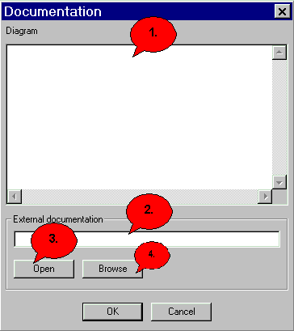

Documentation Dialog |
|
 1. Here you can enter a documentation. 2. Press 'OK' then you leave the dialog and store the entered text. 3. To leave the dialog without storing click 'Cancel'.
|
|
Back to the dialog overview |